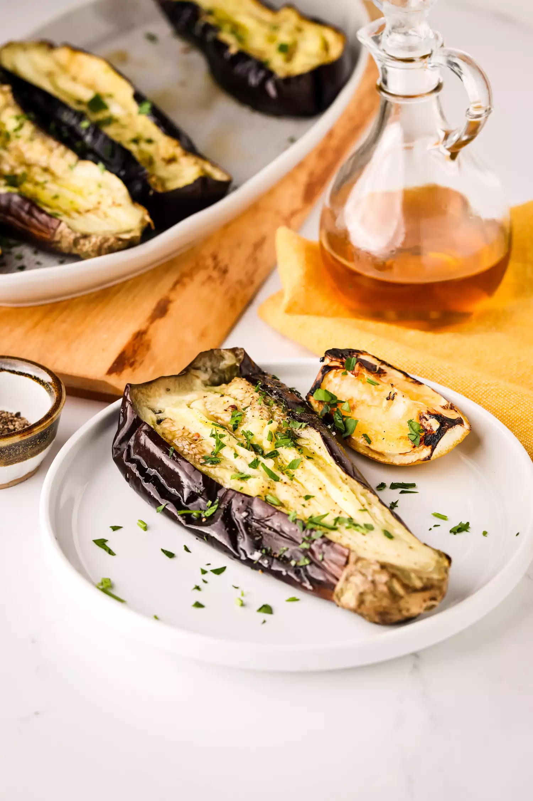

Healthy Grilled Eggplant

Description
This whole grilled eggplant is the perfect for lazy summers! A smoky and lusciously smooth interior is revealed after a 30-minute cook over a hot grill. Serve it with your favorite grilled meats or as a vegetarian main!
Ingredients
- 1 (1-pound) eggplant
- 2 tablespoons extra virgin olive oil
- 1 lemon, halved
- 1 teaspoon flaky sea salt (such as Maldon), plus more to taste
- 1/2 teaspoon freshly cracked black pepper, plus more to taste
- Flat-leaf parsley, finely chopped
Method
Preheat a gas grill to 500°F set to medium-high heat.
Adjust the grill as needed during cook time in order to maintain a temperature between 450°F to 500°F.Poke slits in the eggplant for steam to escape:
With a sharp knife, poke 10 shallow slits spread out around the surface of the eggplant, this will help steam escape, so the eggplant doesn’t abruptly burst open as it cooks.
Grill the eggplant:
Place the eggplant on the preheated grill using tongs and close the lid. The grill will be smoky, that’s okay, as there is no oil (or fat) to cause a flare up.
After 20 minutes, check on the eggplant. If it looks deflated or sunken in on itself and the grilled side is softened to the touch, it’s ready to be flipped. If not, wait another 5 minutes, then use a pair of tongs to flip it to finish cooking until it’s softened all over and mushy between the tongs, 5 minutes.Slice the eggplant and transfer to serving plate:
Slice it in half lengthwise and transfer the halves to a serving plate. Loosely drag a fork through flesh to loosen the eggplant so the eggplant flesh is distributed into the nooks and crannies.Garnish and serve:
Lightly drizzle the eggplant with extra virgin olive oil and squeeze a lemon half over the top. Season with flakey sea salt and freshly cracked black pepper. Garnish with parsley.
Taste and adjust with additional salt, pepper, and lemon juice if needed.
The eggplant skin will get pretty charred, so we recommend just eating the eggplant flesh.
Store leftovers in an airtight container or zip top bag and it will last in the fridge for 2 days.